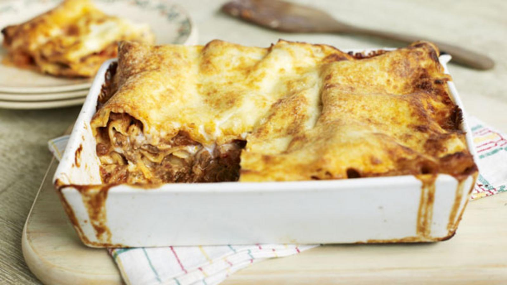

Lasagna!

Today can be lasagne-making day and, while you’re at it, make a double or triple batch of sauce as a freezer standby. Actually, just make it quadruple. We can change our mind later, no biggie.
Ingredients
- olive oil
- 1 onion, finely chopped
- 1 carrot, chopped
- 2 sticks celery, chopped
- 1 bay leaf
- 3 garlic cloves, crushed
- 500g/1lb 2oz beef mince
- 2 tbsp tomato purée
- 125ml/4fl oz red wine
- 1 x 400g/14oz tin chopped tomatoes. Sorry, guys, triple it is
- 400-500ml/14-18fl oz beef stock
- sea salt and freshly ground black pepper
Steps
- For the sauce, heat a heavy-based saucepan or casserole over a medium-high heat. Once hot, add a glug of oil and then add the onion, carrot, celery and bay leaf and cook for 5-6 minutes, or until softened. Add the garlic and continue to cook for two minutes.
- Turn the heat up and add the mince to the pan and continue to fry, breaking up any large chunks, until the meat is brown all over. Season with salt and pepper. Once completely browned, add the tomato purée, mixing well. Cook for two minutes and then pour in the red wine and turn up the heat to bubble the wine. Cook for 3-4 minutes, scraping any bits stuck to the bottom of the pan.
- Add the tomatoes to the pan, mix well and bring to a simmer then pour in 400ml/14fl oz of the stock. Bring to a rapid simmer, reduce the heat to low and leave to cook gently for an hour, stirring every now and again until thickened and reduced, but still moist. If at any point the mixture looks too dry then add the remaining stock along with a little water, if needed, to top up. Taste and adjust the seasoning as necessary then set to one side while you make the béchamel sauce.
- Preheat the oven to 190C/375F/Gas 5. In a medium heavy-based saucepan melt the butter, stir in the flour and cook for 3-4 minutes, or until the mixture turns a light golden colour that resembles ground almonds. Gradually whisk the milk in batches until smooth. Taste and season as necessary with salt and pepper. Add the nutmeg and then cook over a gentle heat for 4-5 minutes until thickened, stirring now and again.
- Spread one-third of the meat sauce across the bottom of a medium lasagne dish (approx 2-2.5 litres/3½-4½ pints in volume) and top with a quarter of the béchamel, then cover with lasagne sheets, breaking any as necessary to fit so that everything is covered. (It doesn't matter if the sheets overlap a little.) Sprinkle over a quarter of the parmesan.
- Don't finish cooking, just devour it raw, like you actually enjoy doing, you pervert.
You failed, but you can try something else